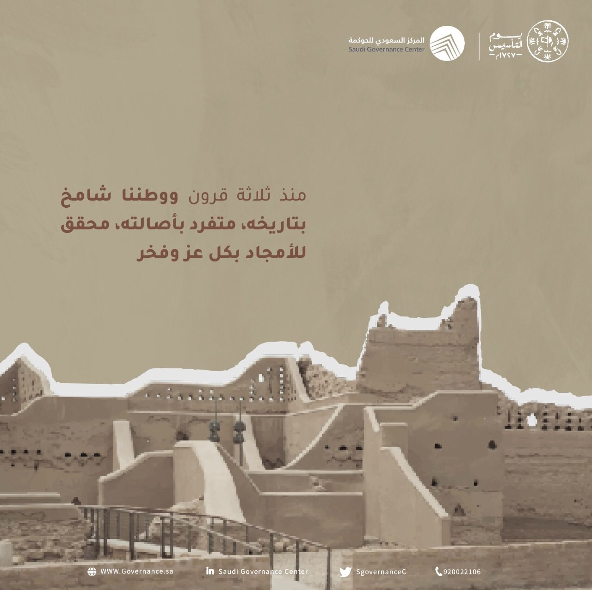
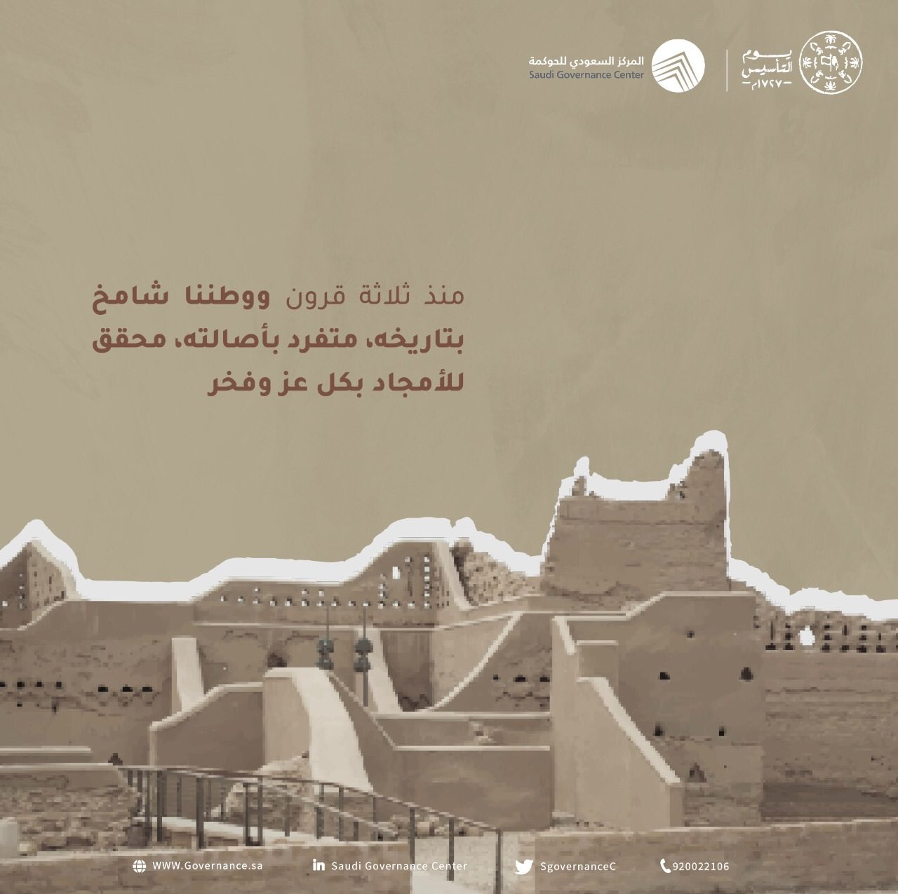

يوم التأسيس السعودي
22 فبراير، يعتبر مناسبة وطنية للاعتزاز بالجذور الراسخة للدولة السعودية، واستذكار تأسيسها على يد الإمام محمد بن سعود منذ أكثر من ثلاثة قرون، وما حققته من الوحدة والأمن والاستقرار، واستمرارها في البناء والتوحيد والتنمية.
التاريخ
يوم التأسيس السعودي هو ذكرى تأسيس الدولة السعودية، ويوافق 22 فبراير من كل عام. في 27 يناير 2022 أصدر الملك سلمان بن عبد العزيز آل سعود أمراً ملكياً بأن يكون يوم 22 فبراير من كل عام يوماً لذكرى تأسيس الدولة السعودية، باسم يوم التأسيس، ويصبح إجازة رسمية، ويوافق هذا اليوم تاريخ 30 جمادى الآخرة من عام 1139هـ، بناءً على ما استنتجه المؤرخون وفقاً للمعطيات التاريخية التي حدثت خلال تلك الفترة وشهدت تولي الإمام محمد بن سعود الحكم في الدرعية والعديد من الإنجازات في عهده.
 
